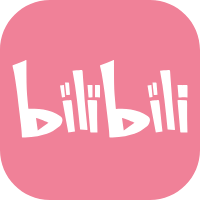
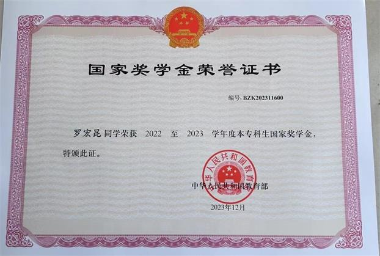
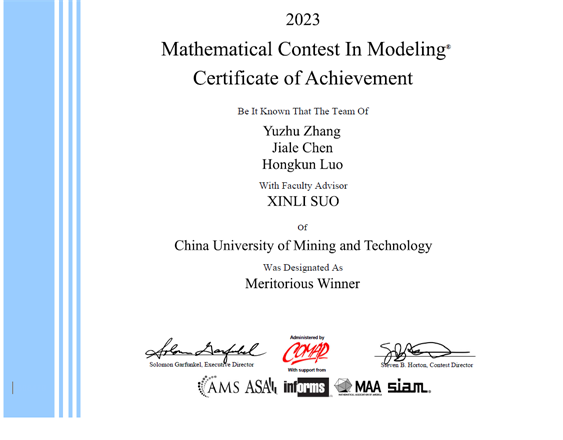
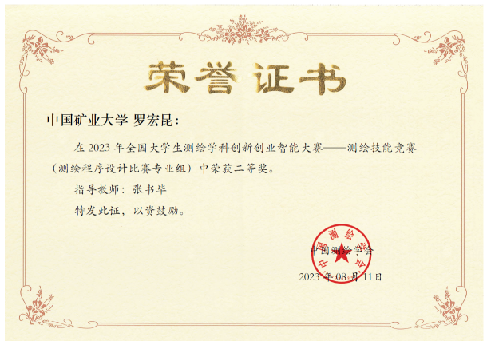
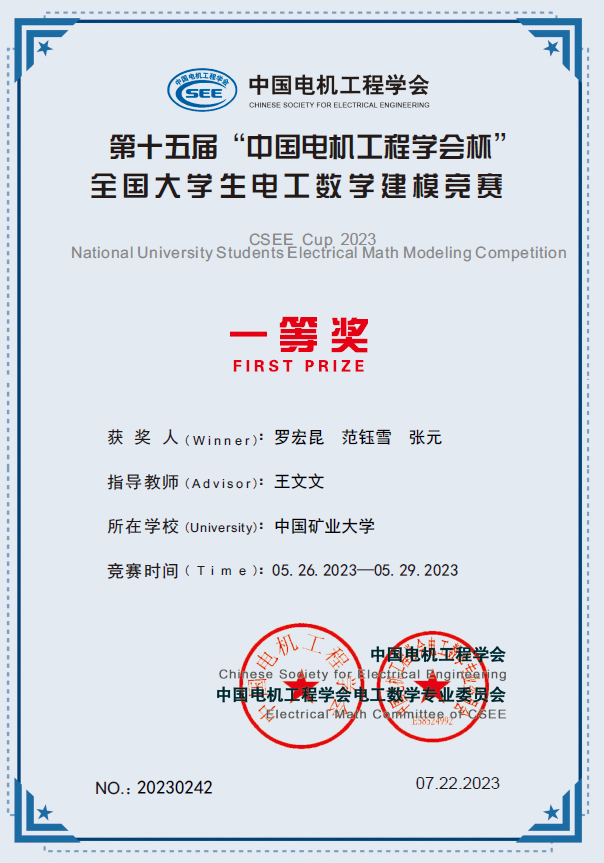
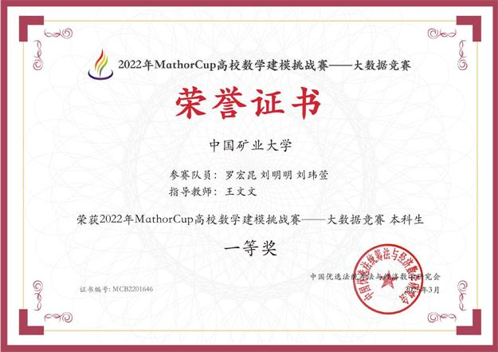
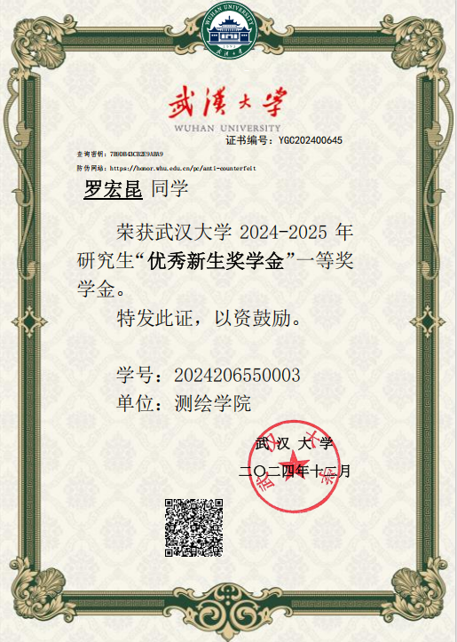
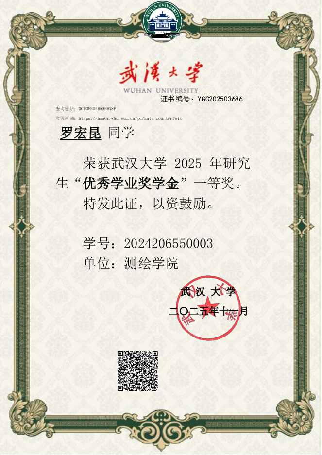
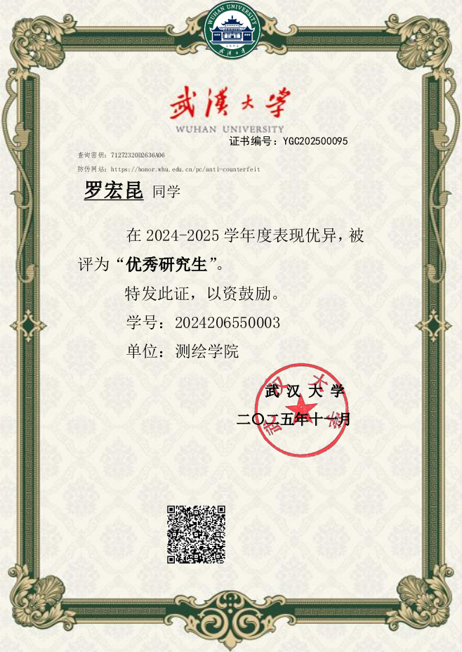
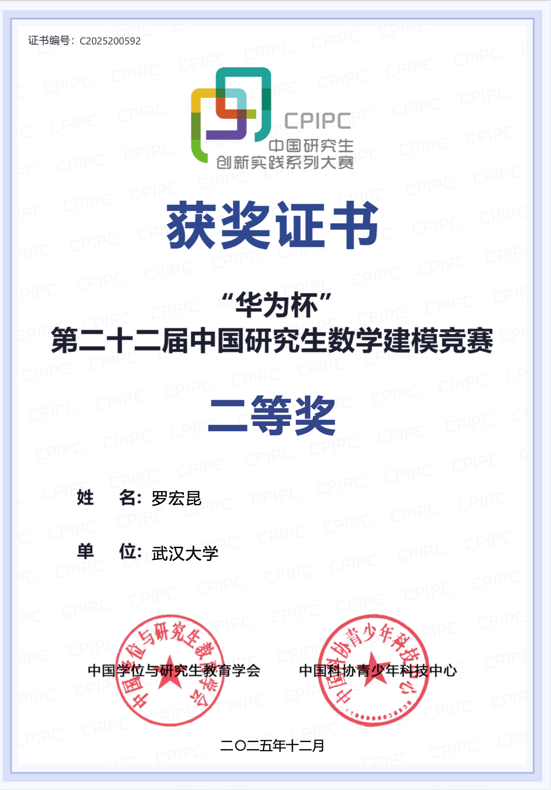

|
Last Update Time: 2026.02.02 | Updated bimonthly My name is Hongkun Luo 🤖 罗宏昆 🤖
In June 2024, I
graduated from China University of Mining and Technology with a
bachelor's degree, under the supervision of Professor Zengke Li. I am a master candidate
from Luojia
Laboratory , School of Geodesy and Geomatics(SGG), GNSS Research Center of Wuhan University, co-supervised by
Professor Chi Guo and Professor Weiwei Song.
📌 I'm always open to new ideas and collaborations! You can reach me through email or any of my social media accounts.  https://luohongkun.top/
https://luohongkun.top/
 
 X: luohongkun0715
X: luohongkun0715
|

|

|
- 🌟 You can fill out the form below to apply for the free consultation for students from disadvantaged groups.📋 Apply for Consultation
- 🌟 I'm interested in intelligent agents, particularly in the intersection of vision-language interaction and lifelong autonomy.
- 🌟 My current focus also includes both end-to-end and stage-wise end-to-end learning algorithm.
- 🔬3D Visual Reconstruction (Gaussian Splatting,VGGT......): for building efficient and accurate scene representations.
- 🔬AI-based Localization and Perception: including visual place recognition, multi-sensor fusion, map-based reasoning.
- 🔬Vision-Language Navigation and Action:connecting natural language with spatial behaviors.
News
- [2026.01] My co-authored paper ReThinkNav was accepted by IEEE ICRA!
- [2025.12] I was awarded the Advanced Individual of the 2025 China Postgraduate Innovation and Practice Series Competition of Wuhan University.
- [2025-11] I received the National Second Prize (Top 3%) in the Huawei Cup Postgraduate Mathematical Modeling Competition.
- [2025-11] [PDF]I received the Outstanding Master’s Student honor at Wuhan University.
- [2025-11] [Video] I successfully completed the full deployment of my VLN system — an independently finished project that enables navigation directly through Chinese language instructions.
- [2025-10] I have launched a monthly free consultation program, primarily aimed at students facing difficulties in their specialized fields.Apply
- [2025-10] I was honored to be a National Scholarship candidate for Postgraduates. Thanks for this precious chance to show myself.
- [2025-10] [Cert.]I was invited to serve as a reviewer for IROS 2025 Workshop, and this is my first time serving as a reviewer for IROS.
- [2025-10] [PDF]I was awarded the First-Class Academic Scholarship at Wuhan University.
- [2025-10] [Cert.]I was invited to serve as a reviewer for ICRA 2026, and this is my first time serving as a reviewer for ICRA.
- [2025-10] [PDF] I released our paper submitted to the 2025 Huawei Cup Graduate Mathematical Modeling Competition.
-
[2025-09]
 I was awarded the title of Outstanding Guest Editor by Satellite Navigation .
I was awarded the title of Outstanding Guest Editor by Satellite Navigation .
-
[2025-09]
 I was invited to join an innovative tech startup as a Technical Advisor and Co-Founder.
I was invited to join an innovative tech startup as a Technical Advisor and Co-Founder.
- [2025-09] I received a research internship offer from the IDEA Research Institute of Digital Economy in the Guangdong-Hong Kong-Macao Greater Bay Area .
- [2025-08] [Video] I successfully deployed a VLA-based VLN framework, with the deployment demonstrated in video.
- [2025-08] [Link] I attended the 6th Annual Conference of China Robotics Society (CCRS 2025), themed “Human-Robot Integration, Intelligent Future,” held in Changsha, China.
- [2025-07] [Link] I was selected by The China Antarctic Research Center for Surveying and Mapping at Wuhan University for the 2025 Yulong Snow Mountain Glacier Expedition in Yunnan. Though I couldn't join due to a time conflict, I'm grateful for the opportunity.
- [2025-07] [Cert.] I was selected as a summer camper for the 2025 Spatial-Temporal Information and Ecological Restoration International Summer School . at China University of Mining and Technology.
- [2025-07] [Link] I served as an Academic Reviewer for IEEE RA-L.
- [2025-04] I served as a Teaching Assistant for the "Artificial Intelligence and Machine Learning" course for the Class of 2023, Intelligent Navigation Major, at Wuhan University.
-
[2025-03]
My paper SuperVINS was accepted by IEEE Sensors Journal!
-
[2024-12]
I won the first-class scholarship for freshmen masters at Wuhan University ([Cert.]) .
- [2024-11] I had taken on the role of student editor for the SCI (Satellite Navigation) .
-
[2024-10]
I won the first prize of the Jiangsu Province Surveying and Mapping Geographic Information
Undergraduate Excellent Graduation Thesis Award.
- [2024-06] I won the title of outstanding graduate of China University of Mining and Technology,a distinction that reflects my alma mater’s acknowledgment of my four years of undergraduate study.
- [2024-06] I graduated from China University of Mining and Technology —a prestigious century-old institution renowned for its rich history and beautiful campus.
-
[2023-09]
I received Chinese National Scholarship.Only 0.2% of Chinese undergraduates can receive this award.
- [2023-08] I participated in the NanJing University International Summer. School with the theme “From the Center of the Earth to the Deepest Point of the Universe”.
Education & Visiting

|
🏫Location: WuHan, China; School level: 985,211 👨🏻🎓Master of Geodesy and Surveying Engineering. 🕒Sep. 2024 - Jun. 2027, Supv.: Prof. Chi Guo,Prof. Weiwei Song |

|
🏫Location: NanJing, China; School level: 985,211 👨🏻💻Participate as a summer school member. 🕒Aug. 2023, [News][Certificate] |

|
🏫Location: XuZhou, China; School level: 211 👨🏻🎓Bachelor of Surveying and Mapping Engineering. 🕒Sep. 2020 - Jun. 2024, Supv.: Prof. Zengke Li, [Score] [Transcript] |

Papers & Projects

|
📑SuperVINS: A Real-Time Visual-Inertial SLAM Framework for Challenging Imaging Conditions 👨🏻🎓Hongkun Luo* , Yang Liu , Chi Guo†, Zengke Li , Weiwei Song 🚀 IEEE Sensors Journal JCR Q1 CAS Q2 IF: 4.5 📅 Time:2025.03 📄 Abstract Preview |

|
📑Accurate Identification and 3D Reconstruction of Surrounding Rock Fractures 👨🏻🎓Hongkun Luo*, Xiangyu Zhang , Xiang He 🚀HUAWEI CUP 2025 Second Prize(92/3086;rank:2.9%) 📅 Time:2025.11 📄 Abstract Preview |

|
📑The Wordle Game Analysis Model 👨🏻🎓Hongkun Luo*, Yuzhu Zhang , Jiale Chen 🚀MCM/ICM International Competition 📅 Time:2023.05 📄 Abstract Preview |

|
📑Zero-Shot Vision-and-Language Navigation with Open-Source LLMs via Contextual Reasoning and Loop Recovery 👨🏻🎓Aolin Li* ,Yixian Yan, Hongkun Luo, Jiao Zhan ,Chi Guo† 🚀IEEE ICRA CCF-B CAA-A 📅 Time:2026.01 📄 Abstract Preview |
|
🛠️Deployment of VLA-Based VLN (NaVILA) 👨🏻🎓Hongkun Luo*, Wenjie Jiang, Yuanyuan Zhu 🚀 RSS 2025 Successfully Deployed on Humanoid Robots 📅 Time:2025.10 📄 Abstract Preview |
 [Code]
[Code]
 [Video]
[Video]
{kind=link}
![[Cert.]](../images/IROS_review.png){kind=link}
![[Cert.]](../images/ICRA_review.png){kind=link}
![[Cert.]](../images/CUMT_summer_school.png){kind=link}
![[Certificate]](../materials/NJU_summer.jpg){kind=link}
Industrial Experience
|
🕒Apr. 2026 - Now 🌱 RoboticsX Lab, ShenZhen, China 👬worked with Team Leader Yonggen Ling ✨Topic: SLAM for UMI, Learning-based Odometry, and Navigation Development |
🏠IDEA(International Digital Economy Academy) 🕒Sep. 2025 - Dec. 2025 🌱Robotics Research Center, ShenZhen, China 👬worked with Ph.D. Jiajun Jiang ✨Topic: Map Construction and Understanding,VLN |
Individual Awards
🏆2026.01 Advanced Individual in the China Postgraduate Innovation Practice Series Competition, Wuhan University
🏆2025.11 National Second Prize (Top 3%) in the Huawei Cup Postgraduate Mathematical Modeling Competition(💰4000)
🏆2024-2025 Outstanding Master’s Student in Wuhan University
🏆2024-2025 First Class Academic Scholarship in Wuhan University(10%)(💰4000)
🏆2025.09 The Outstanding Guest Editor of Satellite Navigation
🏆2024.12 The First Class scholarship for Freshmen Masters at Wuhan University(💰5000)
🏆2024.10 The First Prize of The Jiangsu Province Surveying and Mapping Geographic Information Undergraduate Excellent Graduation Thesis Award (5%)
🏆2024.06 Outstanding Graduate of China University of Mining and Technology
🏆2022-2023 National Scholarship for Chinese Undergraduate Students (0.2%)(💰8000)
🏆2023 National Second Prize in Surveying and Mapping Programming Group-Surveying and Mapping Skills Competition
🏆2023 The First Prize of The National Electrotechnical Mathematical Modeling Competition for College Students (5%)
🏆2023 The First Prize of MathorCup Big Data Challenge (5%)
🏆2023 Meritorious Winner-Mathematical Contest in Modeling/Interdisciplinary Contest in Modeling(7%)
🏆2021-2022 Surveying & Mapping Scholarship (sponsored by Nanjing Institute of Surveying, Mapping and Geotechnical Investigation Co., Ltd.) (💰4000)
🏆2021-2022 First Class Academic Scholarship in China University of Mining and Technology(💰4000)
🏆2020-2021 First Class Academic Scholarship in China University of Mining and Technology(💰4000)









Professional Services
⚡️2025.10 An academic reviewer for 🔗IROS 2025 Workshop AIR4S .
⚡️2025.10 An academic reviewer for 🔗ICRA 2026 .
⚡️2024.09-2025.09 An outstanding guest editor of 🔗Satellite Navigation.
⚡️2025.09-Now A technical advisor and co-founder of a tech startup company.
⚡️2025.07-Now An academic reviewer for 🔗IEEE RA-L .
⚡️2025.04-2025.07 A teaching assistant for “AI and ML” Class of 2023, Intelligent Navigation Major, Wuhan University.
⚡️2024.11-2025.11 A student editor of the academic journal "🔗Satellite Navigation".
🤜🤛 Friends & Collaborators
I sincerely appreciate the inspiring opportunities to exchange ideas and collaborate with the following friends.